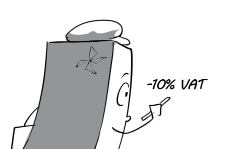
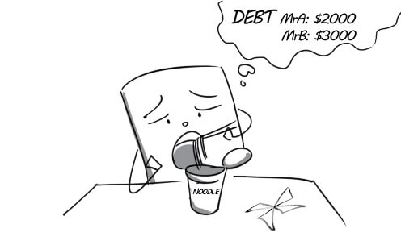
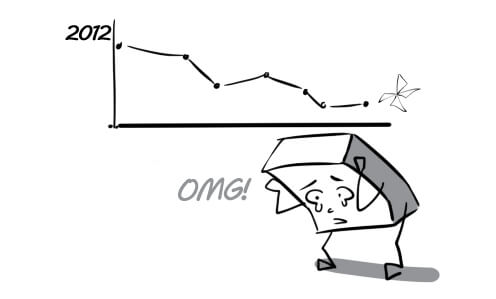
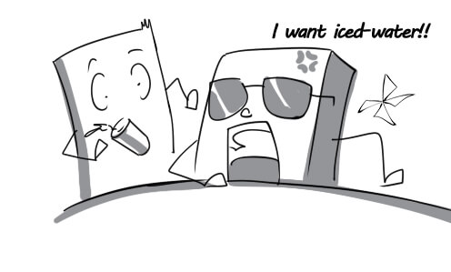
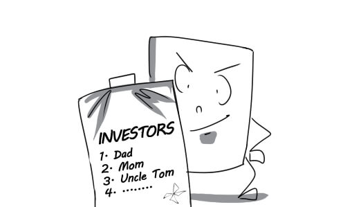
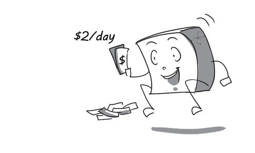
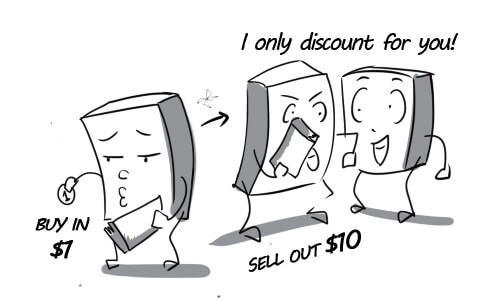
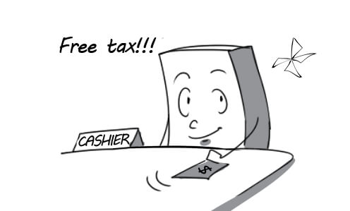
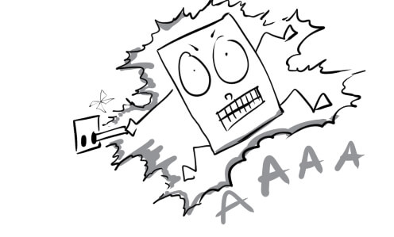

accurately: You should address the package accurately so that it will reach its destination without any problems.
(chính xác) adv
carrier: With 5 Min Carrier, everything can be delivered in the shortest time.
(người vận chuyển, hãng vận chuyển) n

catalog: Tom offers his customers a catalog so that they can choose a shipping service that best suits them.
(danh mục) n

fulfill: Our employees are always able to fulfill their missions however hard they are.
(hoàn thành) v

integral: Cars are integral to delivery men.
(thiết yếu) adj
inventory: The director had a hard time finding a way to liquidate the large inventory.
(hàng tồn kho) n
minimize: The driver is supposed to find the best route to minimize the delivery time.
(giảm thiểu) v

on hand: There are always some employees on hand to help customers.
(sẵn có) adj

remember: Tom remembered accurately the address of this package's destination.
(nhớ) v

ship: Andrew's friends had the present shipped to his house right on his birthday.
(giao hàng) v

sufficiently: All the goods were delivered sufficiently to their receivers.
(đầy đủ) adv

supply: We need large supply of toys for this Christmas season.
(nguồn hàng) n

charge: Every customers are charged 10% of their purchase's value as VAT.
(tính phí) v

compile: The assistant has to compile a list of the names and addresses of customers.
(tổng hợp) v

customer: Lisa is a frequent customer of this store. She shops here twice a week.
(khách hàng) n

discount: Mary was very happy when the cashier gave her a discount card to save 80% on every purchase.
(giảm giá) n

efficient: This device is not as efficient as advertised on TV.
(hiệu quả) adj

estimate: John is estimating the cost of groceries he has to buy for his party.
(ước lượng) v
impose: Tom imposed his demand for an invoice from the cashier.
(bắt buộc) v
mistake: The customer is very angry because there is a big mistake on her invoice.
(nhầm lẫn) n

order: The long list of order made the sale manager really contented.
(đơn đặt hàng) n

promptly: In spite of the traffic jam, Peter still managed to come to the meeting promtly.
(đúng lúc) adv

rectify: The seller tries to rectify the invoice cleverly, he made a serious mistake.
(sửa chữa) v

terms: Tom must follow the company's terms when selling products.
(điều kiện) n

adjustment: The shop manager make adjustment on the prices of some products to sell them faster.
(điều chỉnh) n

automatically: The prices of old products will be automatically discounted when a new line is launched.
(tự động) adv

crucial: The director had to make a crucial decision about selling these products at a lower price.
(then chốt) adj
discrepancy: There's a discrepancy between the quality of new products and that of old one.
(khác biệt) n

disturb: The noise from outsite disturbed Tom when he was checking the selling numbers.
(làm phiền) v

liability: Keeping the office clean is the liability of every staff member.
(nghĩa vụ, trách nhiệm) n

reflection: Peter always looks at his relection everytime he passes a mirror.
(ảnh phản chiếu) n

run: Mr Green can finally make his new TV run properly.
(vận hành, thực hiện) v
scan: Customers usually scan all products before deciding to buy something.
(xem lướt qua) v

subtract: John decided to subtract the mouse from his purchases because he didn't have enough money.
(trừ đi) v
tedious: Checking and viewing the inventory everyday is such a tedious job.
(tẻ nhạt, chán) adj

verify: ‘Who can verify that you weren’t at the warehouse last night?’ ‘My friend!’, Tom answers.
(xác thực) v

accept: Most stores in the US accept a credit card instead of cash.
(chấp nhận) v
balance: Peter was really shocked when he found out his credit card balance is zero.
(tiền trong tài khoản) n
borrow: Tom always borrows money from his friends without paying it back.
(mượn, vay) v

cautiously: The cashier check the bill cautiously to find out if it is fake or not.
(thận trọng) adv

deduct: VAT has been deducted from the payments.
(khấu trừ) v

dividend: Shareholders will receive their dividend from the company every quarter.
(lãi từ cổ phần) n
down payment: After paying the down payment on the house, Jack has no money left.
(phần tiền trả trước) n

mortgage: You may need a mortgage if you want to buy a house.
(vay thế chấp) n

restricted: Smoking is restricted at public places.
(hạn chế) adj
signature: The contract was complete with the customer signature.
(chữ ký) n

take out: He can take out his money from all ATMs throughout Vietnam.
(lấy ra, rút ra) v

transaction: China has attained the top position in the world of annual gold transaction.
(thương vụ, giao dịch) n

accounting: If you are really good at numbers, you should choose accounting as your career.
(kế toán) n

debt: Mr Morgan is heavily in debt after his company went bankrupt.
(món nợ) n

outstanding: Tom had to finish all his outstanding work before going to bed.
(còn tồn đọng, chưa giải quyết) adj

profitably: Mr Geller is very content with seeing his business grow profitably.
(có lợi, sinh lời) adv

turnover: The CEO worries very much, the turnover of his business goes down this year.
(doanh thu) n

aggressively: Mr Grant gets out of the room aggressively after the client denies his project.
(hùng hổ, hung hăng) adv

attitude: The waiter is so scared by this customer who has a very bad attitude.
(thái độ) n

commit: The two parties were willing to commit themselves to this agreement.
(cam kết) v

conservative: The conservative director insists on using his outdated computer instead of a modern laptop.
(bảo thủ, dè dặt) adj

fund: He donated a small amount of money to the Red Cross Fund.
(quỹ) n

invest: Apple is to invest a large amount of money in a new store in Brazil.
(đầu tư) v

long-term: His long-term goal is to open a large store in the downtown.
(dài hạn, lâu dài) adj

portfolio: The chairman presented a new portfolio at the annual general meeting.
(danh sách vốn đầu tư) n

pull out: A big shareholder has just pulled out of the company, it causes many financial problems.
(rút khỏi, ngừng tham gia) v

resource: We have to have sufficient resources if we want to sucess.
(tài nguyên, nguồn lực) n

return: Although my business is quite small, it still produces great returns.
(lợi nhuận) n

wisely: You need to use your money wisely if you want to succeed in business.
(một cách khôn ngoan) adj

calculation: A calculator is very necessary for accountants to solve these calculations.
(tính toán, đo lường) n

deadline: Jimmy has not finished his tax report although the deadline is tomorrow.
(hạn chót) n
file: Jack prepared necessary documents to file a federal income tax return.
(đệ trình, kê khai) v
fill out: Adam finished filling out all the papers.
(hoàn thành) v

give up: The store finally gives up the taxes for the customers.
(bỏ, ngưng) v

joint: The company has succeeded, thanked to the joint effort of everyone.
(chung) adj

owe: Creditors are looking for Tom because he owes them a lot of money.
(nợ) v

penalty: Paul was charged a penalty of $10,000 for taxes evading.
(hình phạt, án phạt) n

preparation: She is in preparation for the taxes report this month.
(sự chuẩn bị) n
refund: You can have a refund of your money if you're not happy with your purchase.
(hoàn trả) n

spouse: Mrs Green can't stand her spouse anymore because he is so lazy.
(người bạn đời) n
withhold: After going shopping for groceries, the housemaid withheld some from the remaining money.
(giấu, giữ lại) v

desire: The director desires that his company's turnover would increase by 70% in the next 6 months.
(ước muốn) v

detail: The chairman details business results of the company in the past year.
(trình bày chi tiết) v

forecast: Gold consumption is forecast to decrease because of the financial crisis.
(dự báo) n

level: High levels of bankruptcy are typical of a bad economy.
(mức độ) n

overall: The overall result of the wrong decision is that our company lost $200,000.
(tổng quan) adj
perspective: Having different perspective, two managers keep arguing.
(quan điểm, cái nhìn) n

project: The manager projects the cost of the next year plan.
(dự đoán) v

realistic: He is very disappointed because the realistic result is worse than expected.
(thực tế) adj

target: Our company targets primary students as the main source of consumer spending.
(nhắm đến) v

translation: The translation of Indian manager's speech into English was very clear and accurate.
(biên dịch) n

typically: Typically, it takes at least $10,000 to start a business.
(đặc thù) adv

yield: This illegal company tries to blind Mr Tran with a giant annual yield.
(lợi tức) n

adjacent: The IT department is adjacent to the design department.
(kế bên) adj

collaboration: In collaboration, they move the heavy table easily.
(cộng tác) n

concentrate: Tony concentrated all his mind on the report.
(tập trung) v

conductive: Silver is the most electrically conductive metal.
(hữu ích (có tính dẫn truyền)) adj

disruption: There has been so many disruptions while he's trying to finish his job.
(cắt ngang) n
hamper: His jealous colleague tried to hamper his work by hiding all the documents he needed.
(cản trở) v

inconsiderately: He inconsiderately sneezed at his boss at the meeting.
(vô ý tứ, vô lễ) adv

lobby: The lobby of Blueway is specially designed to create a pleasant and welcoming atmosphere.
(tiền sảnh) n
move up: It is unbelievable that he could move up to the team leader position after just 2 years working here.
(tiến lên, thăng tiến) v

open to: The CEO position is open to competition from many co-workers.
(dễ bị…) adj

opt: The manager will opt for the best employees to help him with this project.
(chọn) v
scrutiny: All his work performance was placed under scrutiny.
(sự kiểm soát chặt chẽ) n